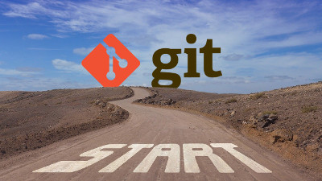
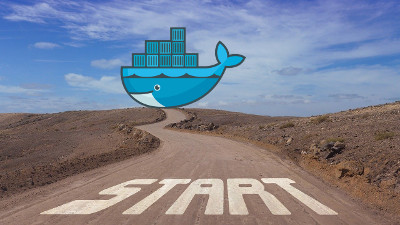
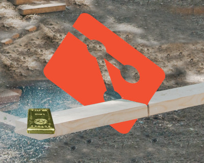
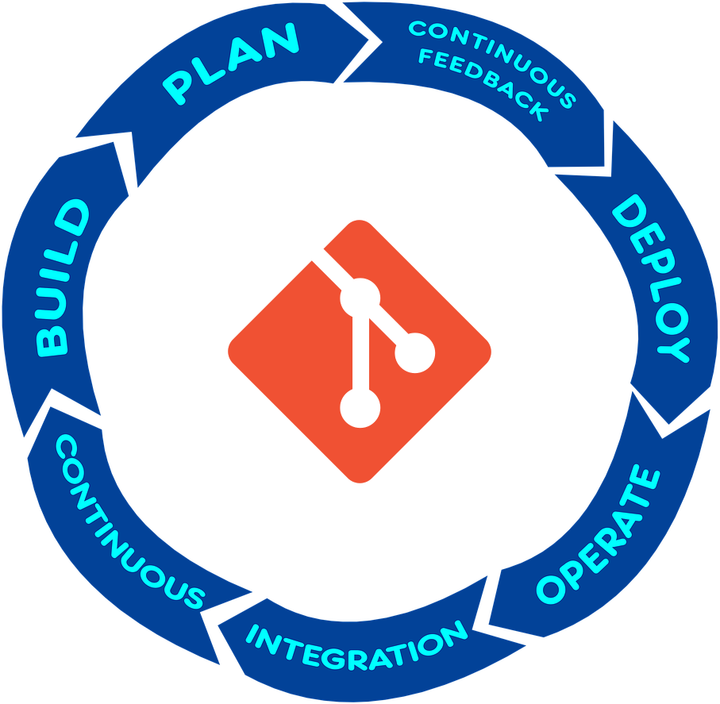
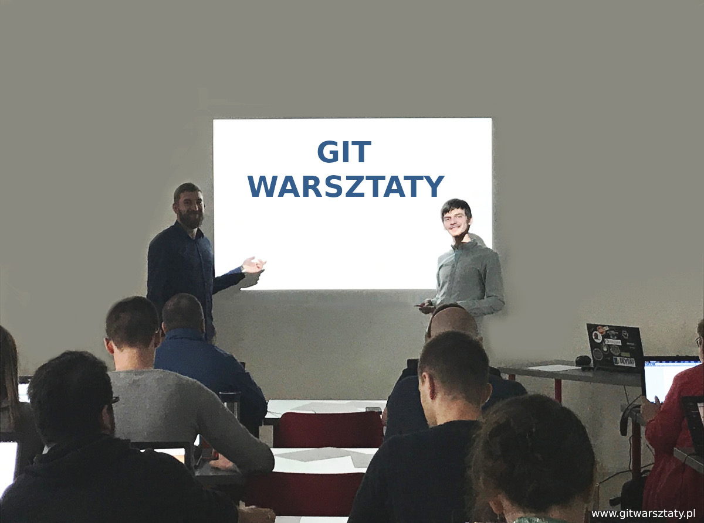

Szkolenia z Gita, Dockera i Pipelinów CI&CD
Świadomie dobierając polecenie Gita, podniesiesz swoją wydajność i satysfakcję z pracy, dzięki Dockerowi, odzyskasz cenny czas deploymentu i zautomatyzujesz wiele codziennych czynności, a pipeliny przeprowadzą Wasz software przez wszystkie etapy wytwarzania oprogramowania.
Większa wydajność i satysfakcja z pracy z doszlifowaną znajomością Gita
Szkolenie Szlifowanie Gita, przeznaczone jest dla zespołów, które znają podstawy Gita, ale chcą usprawnić swoją pracę. Git leży u podstaw codziennych obowiązków każdego deva, opsa, devopsa, testera, specjalisty od security i... ogólnie każdego z branży IT. Efektywnie wykorzystany Git, to fundament efektywnej pracy.
Wprowadzenie do Gita od zera
Szkolenie Git od zera przewidziane jest dla zespołów, które dopiero wdrażają Gita. Po warsztatach zyskasz umiejętności, dzięki którym unikniesz wielu kosztownych i stresujących błędów, na które skazana jest samodzielna nauka, np. utraty napisanego kodu.
Wprowadzenie do Dockera od zera

Szkolenie Docker od zera przewidziane jest dla zespołów, które zaczynają pracę z Dockerem.
Objaśniamy teorię, ale skupiamy się na ćwiczeniach praktycznych.
Z Dockerem deploy systemu jest o wiele tańszy, szybszy i przyjemniejszy, a co za tym idzie mniej błędogenny. Docker służy również jako świetne usprawnienie codziennej pracy, dzięki któremu łatwo zautomatyzujesz różne zadania.
Git Efekt Uboczny - lepszej jakości kod powstający szybciej
Szkolenie Git Efekt Uboczny, skupia się na wykorzystaniu Gita do pisania lepszej jakości kodu. Git to narzędzie do wersjonowania, ale przy okazji, gdy jest odpowiednio wykorzystany, ma znaczący wpływ na efekty naszej pracy. Opanuj techniki Gita, dzięki którym będziesz pracował szybciej, lepiej i czerpał z pracy większą przyjemność.
Pipeline CI/CD - usprawniony lub przygotowany od zera
Szkolenie Pipeline CI/CD przewidziane jest dla programistów, testerów i wdrożeniowców. Pipeliny to serce całej organizacji, należy przykładać do nich dużą wagę. Wolne flow rzutuje cały proces wytwarzania oprogramowania, dlatego wspólnie będziemy doszukiwać się wąskich gardeł i powtarzających schematów, które można zautomatyzować.
Na warsztatach pokażemy Ci sprawdzone techniki pomagające utrzymać efektywny flow i ogólne dobre praktyki.
Nie trać czasu na zadania, które Git i Docker mogą wykonać za Ciebie... przećwicz je praktycznie!
Umów WarsztatyAutorzy szkolenia z Gita i Dockera
Prowadzimy szkolenia z Gita od 2018 roku.
Git to podstawa pracy każdego Deva, Opsa i Testera, zrozumienie jak najlepiej z nim pracować, to temat ważny, lecz pomimo
upływu lat wciąż pomijany. Wasze bardzo pozytywne opinie, które zawsze otrzymujemy po warsztatach, są dla nas motywcją, żeby wciąż docierać z naszą wiedzą i doświadczeniem, do kolejnych osób.
Tomasz Skraskowski - pasjonat programowania, wychowany na C++, obecnie wyspecjalizowany w C#. Szkoli, występuje, prowadzi bloga SoftwareDeveloper.Blog, na którym największą poczytnością cieszą się posty na temat Dockera i Gita. Więcej o trenerze na stronie Tometchy.com
Krzysztof Morcinek - również pasjonat programowania skoncentrowany na platformie .NET i czystym kodzie. Oprócz szkolenia i występowania publicznego prowadzi bloga - KrzysztofMorcinek.Wordpress.com
Software craftsmanship to nasza pasja. Czysty kod w krótkim czasie, częsty deploy na produkcję, skutkujący szybkim feedbackiem od klientów, to wszystko możliwe, ale wymaga optymalnego wykorzystania istniejących narzędzi. Git i Docker są do wydajnej pracy niezastąpione, dlatego kładziemy nacisk nie tylko na nasze umiejętności programistyczne, ale na optymalne wykorzystanie Gita, Dockera i innych ważnych narzędzi. Lubimy pomagać i uczyć innych, dlatego oprócz wytwarzania oprogramowania chętnie dzielimy się swoją wiedzą i doświadczeniem.
Ostatnie wpisy
{% for post in site.posts limit:3 %}

{% endfor %}